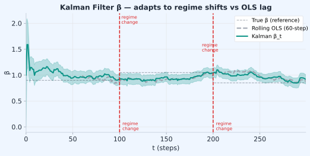

Statistical Arbitrage · บทที่ 15
Dynamic Hedging ด้วย Kalman Filter: β ที่เปลี่ยนตามเวลา
β_t ไม่คงที่ — Kalman Filter track β แบบ real-time โดยไม่ต้อง refit
แก่นของบทนี้ — อ่านก่อน
β ระหว่าง Bybit และ Lighter ไม่คงที่ตลอด — เปลี่ยนตามสภาพตลาด Kalman Filter ให้ estimate β_t แบบ online โดยไม่ต้อง refit ทั้งหมด ทำให้ hedge ratio ตามทัน regime เปลี่ยน นี่คือ method หลักของ
Funding Rate Harvest strategy (ดู
บทที่ 4 §4.5 ) ที่ต้องการ ε_t ≈ 0 ตลอดเวลา
$$\beta_t = \beta_{t-1} + w_t \qquad \text{(state equation)} \qquad r_{A,t} = \alpha + \beta_t\, r_{B,t} + v_t \qquad \text{(observation)}$$
15.1 ปัญหาของ Static β
บทก่อนๆ ใช้ β ที่ estimate จาก OLS บน window คงที่ เช่น 30 วัน แนวทางนี้มีปัญหาหลายประการ
ปัญหาของ Rolling OLS
Lag problem: β วันนี้คือค่าเฉลี่ยของ 30 วันที่ผ่านมา ไม่ใช่ค่า "ตอนนี้"Window selection: window 7 วัน responsive แต่ noisy; window 60 วัน stable แต่ช้า ไม่มี window ที่ถูกเสมอRegime change: เมื่อ volatility หรือ liquidity เปลี่ยนกะทันหัน β OLS ปรับไม่ทันComputational cost: Refit OLS ทุก tick = matrix inversion ซ้ำๆ
Kalman Filter แก้ปัญหาอย่างไร?
Online update: ปรับ β_t ทุก timestep ด้วยสูตรเดียว — ไม่ต้อง refit ทั้งหมดไม่มี window: ใช้ Q และ R แทน window — ทั้งคู่มีความหมายทางสถิติชัดเจนUncertainty tracking: P_t บอก confidence ใน estimate ปัจจุบันFast computation: O(1) per update — เหมาะกับ real-time มาก
15.2 State Space Model — สองสมการหลัก
Kalman Filter ทำงานบน State Space Model ซึ่งแบ่งเป็นสองส่วน
สมการ State Space
$$\beta_t = \beta_{t-1} + w_t, \quad w_t \sim \mathcal{N}(0, Q) \qquad \text{(Process equation)}$$
$$r_{A,t} = \beta_t \cdot r_{B,t} + v_t, \quad v_t \sim \mathcal{N}(0, R) \qquad \text{(Observation equation)}$$
β_t = state ที่ซ่อนอยู่ (true hedge ratio ณ เวลา t) — ไม่สังเกตโดยตรงr_{A,t}, r_{B,t} = return ของ Bybit และ Lighter — สังเกตได้w_t = process noise — β เปลี่ยนแค่ไหนต่อ step (Q ใหญ่ = เปลี่ยนเร็ว)v_t = measurement error — ความไม่แน่นอนในการสังเกต return (R = measurement error variance; R ใหญ่ = สัญญาณจาก data noisy → Kalman เชื่อ data น้อยลง)
พารามิเตอร์ ความหมาย ค่าที่ใช้ทั่วไป ตัวอย่างตัวเลข ผลเมื่อเพิ่ม Q (process noise) β เปลี่ยนเร็วแค่ไหนต่อ step 1e-5 ถึง 1e-3 Q=1e-3 → β drift ≈ √(1e-3) ≈ 0.032 ต่อ bar β ตอบสนองเร็วขึ้น แต่ noisy R (measurement error variance) ความไม่แน่นอนของ observation — variance ของ noise ใน return ที่สังเกตได้ 1e-4 ถึง 1e-1 R=0.01 → return std ≈ 1%; R=0.001 → ≈ 0.3% Kalman gain ลด → ปรับช้าลง P_0 (initial uncertainty) ความไม่แน่ใจใน β ตอนเริ่ม 1.0 P_0=1.0 → warm-up ~50 bars; P_0=0.01 → เริ่มเชื่อค่า β เดิมมาก warm-up period สั้นลง
15.3 Kalman Filter Steps — Predict และ Update
ทุก timestep มีสองขั้นตอน: Predict (คาดการณ์ล่วงหน้า) และ Update (ปรับด้วยข้อมูลใหม่)
ขั้นตอน Predict
β̂_{t|t-1} = β̂_{t-1|t-1} (คาด β จาก prior)
P_{t|t-1} = P_{t-1|t-1} + Q (uncertainty เพิ่มขึ้น เพราะเวลาผ่าน)
เพราะ process equation บอกว่า β drift ด้วย w_t ~ N(0,Q) → uncertainty เพิ่มทุก step
ขั้นตอน Update (เมื่อเห็น r_A,t และ r_B,t)
innovation = r_{A,t} - β̂_{t|t-1} · r_{B,t} (ความต่างจากที่คาด)
S = r_{B,t}² · P_{t|t-1} + R (variance ของ innovation)
K_t = P_{t|t-1} · r_{B,t} / S (Kalman Gain)
β̂_{t|t} = β̂_{t|t-1} + K_t · innovation (update β)
P_{t|t} = (1 - K_t · r_{B,t}) · P_{t|t-1} (update uncertainty)
ความหมายของ Kalman Gain K_t
K_t อยู่ระหว่าง 0 ถึง 1 และบอกว่า "เชื่อข้อมูลใหม่มากแค่ไหน"
K_t ใกล้ 1: เชื่อข้อมูลใหม่มาก (Q ใหญ่หรือ R เล็ก) — β ปรับเร็วK_t ใกล้ 0: เชื่อ prior มาก (Q เล็กหรือ R ใหญ่) — β ปรับช้าระยะแรก (P สูง): K สูง — warm up เร็ว; เมื่อ P ลด: K ลด — stable estimate
15.4 SVG Diagram — β_t Kalman vs Static OLS

เมื่อ regime เปลี่ยน Kalman ปรับ β_t เร็วกว่า OLS มาก ลด hedge error ใน zone สีชมพู
15.5 Pseudo-code: kalman_beta_update()
def kalman_beta_update(beta, P, r_A, r_B, Q=1e-5, R=1e-3):
# --- Predict step ---
beta_pred = beta # β ไม่เปลี่ยน (random walk assumption)
P_pred = P + Q # uncertainty เพิ่มขึ้น
# --- Update step ---
innovation = r_A - beta_pred * r_B # ความต่างจากที่คาด
S = r_B**2 * P_pred + R # variance ของ innovation
K = P_pred * r_B / S # Kalman Gain
beta_new = beta_pred + K * innovation # update β
P_new = max((1 - K * r_B) * P_pred, 1e-10) # guard: P ต้อง > 0 เสมอ
return beta_new, P_new
วิธีใช้ใน loop จริง
# Initialization
beta = 1.0 # เริ่มจาก 1:1 (prior)
P = 1.0 # high uncertainty ช่วงแรก
# Real-time update
for each new price tick:
r_A = log(price_A_now / price_A_prev)
r_B = log(price_B_now / price_B_prev)
beta, P = kalman_beta_update(beta, P, r_A, r_B, Q=1e-5, R=1e-3)
# Recompute spread with new beta
epsilon = log(price_A) - beta * log(price_B)
z_score = (epsilon - epsilon_mean) / epsilon_std
⚠️ Implementation Trap: epsilon_mean และ epsilon_std ต้องอัปเดตตาม β
ทำไม θ และ σ_stat เดิมใช้ไม่ได้? เพราะ ε = log(P_A) − β ·log(P_B) — ถ้า β เปลี่ยน ค่า ε ทุกจุดในอดีตก็เปลี่ยนด้วย ราวกับว่าเรา recompute ε series ทั้งหมดใหม่ด้วย β ใหม่ ดังนั้น mean และ std ที่ calibrate ไว้บน ε เดิมจะ mismatch กับ ε ชุดใหม่ทันที
ตัวอย่าง: β เปลี่ยนจาก 1.000 → 1.005 เมื่อ log(P_B) ≈ 10 → ε เปลี่ยนทุกจุดไป −0.05 → θ เดิมที่ 0.001 กลายเป็น −0.049 ทันที ถ้า z-score ยังใช้ θ เก่า จะ off ไปถาวร
วิธีแก้ที่แนะนำ: ใช้ EMA ที่อัปเดต real-time ทุก bar แทนค่าคงที่จาก calibration:
# ✅ Concrete solution: Welford-style EMA mean+variance
# Initialization จาก historical calibration
alpha_ema = 0.02 # EMA decay (effective window ≈ 1/α = 50 bars)
epsilon_mean = epsilon_0 # ค่าเริ่มต้นจาก historical mean ของ ε
epsilon_var = epsilon_var0 # variance เริ่มต้นจาก historical var
# Real-time update loop
for each new price tick:
r_A = log(price_A_now / price_A_prev)
r_B = log(price_B_now / price_B_prev)
# 1. Update β via Kalman
beta, P = kalman_beta_update(beta, P, r_A, r_B, Q=1e-5, R=1e-3)
# 2. Recompute epsilon ด้วย beta ใหม่
epsilon = log(price_A) - beta * log(price_B)
# 3. ✅ FIX: คำนวณ diff ก่อน update mean (Welford-style)
# ป้องกัน variance bias จากการใช้ updated mean ใน variance update
diff = epsilon - epsilon_mean # ใช้ OLD mean
# 4. Update mean
epsilon_mean = epsilon_mean + alpha_ema * diff
# 5. Update variance ด้วย OLD diff (EMA variance: w_new*diff² + w_old*var_old)
epsilon_var = (1 - alpha_ema) * epsilon_var + alpha_ema * diff**2
epsilon_std = sqrt(epsilon_var + 1e-10) # guard zero division
# 6. z-score ที่ unbiased
z_score = (epsilon - epsilon_mean) / epsilon_std
15.6 Choosing Q and R — Tuning พารามิเตอร์
การเลือก Q และ R เป็น trade-off ระหว่าง responsiveness กับ stability
สถานการณ์ Q ที่แนะนำ R ที่แนะนำ ผลที่ได้ β เปลี่ยนเร็ว (volatile market) ใหญ่ (1e-4) ปกติ (1e-3) β ตอบสนองเร็ว แต่ noisy β เปลี่ยนช้า (stable pair) เล็ก (1e-6) ปกติ (1e-3) β smooth แต่ lag เมื่อ regime เปลี่ยน Data noisy มาก (thin market) ปกติ (1e-5) ใหญ่ (1e-2) ไม่ over-react ต่อ noise Data สะอาด (deep market) ปกติ (1e-5) เล็ก (1e-4) update เร็วขึ้นจาก each observation
วิธีหา Q และ R จากข้อมูล
Empirical Calibration
R: ประมาณจาก variance ของ residual ε บน historical dataR ≈ Var(r_A − β_static · r_B)Q: ประมาณจาก variance ของการเปลี่ยนแปลง β ระหว่าง rolling windowsQ ≈ Var(β_{t} − β_{t-1}) จาก rolling OLS ที่ window เล็กCross-validate: test บน out-of-sample เพื่อหา (Q,R) ที่ให้ spread mean-revert ที่สุด
15.7 Position Adjustment เมื่อ β เปลี่ยน
เมื่อ Kalman ให้ β_new ≠ β_old คุณต้องปรับ position เพื่อรักษา hedge ratio ที่ถูกต้อง
สูตรปรับ Position
$$\Delta N_B = (\hat\beta_{\text{new}} - \hat\beta_{\text{old}}) \times N_A$$
delta_position_B > 0: β เพิ่ม → ต้อง short B เพิ่มขึ้น (หรือ long B น้อยลง)delta_position_B < 0: β ลด → ต้อง short B น้อยลง (หรือ long B เพิ่ม)
Threshold สำหรับ Rebalancing
อย่าปรับทุก tick เพราะ transaction cost กินกำไร ตั้ง threshold เช่น:
if abs(beta_new - beta_old) > 0.01: # β เปลี่ยน > 1%
delta = (beta_new - beta_old) * size_A
adjust_position(venue="Lighter", delta=delta)
beta_old = beta_new
0.01 เป็น rule of thumb — calibrate จาก fee structure จริง
15.8 ราคาของการ Adapt: Q, Turnover ของ β, และ Deadband
§15.7 แนะนำ threshold คร่าวๆ (|Δβ|>0.01) เพื่อลด transaction cost — แต่ไม่ได้อธิบายว่า ทำไม Kalman ถึงมีต้นทุนสูงกว่า static OLS โดยธรรมชาติ และควรคำนวณ threshold นั้นจากอะไรบ้าง นี่คือปัญหาที่ผู้ใช้เล่มนี้เจอจริง: ใช้ Kalman "ดีกว่า rolling OLS เพราะ adapt เร็ว" แล้วขาดทุนจาก churn โดยไม่รู้ตัว
ยิ่ง Adapt เร็ว ยิ่งจ่าย Fee บ่อย — และ ε ที่ดู "นิ่งเกินไป" อาจเป็นสัญญาณเตือน
Kalman filter อัปเดต β ทุก observation ตามสัดส่วน Q/R — ถ้า Q (process noise) ตั้งใหญ่ β จะ "วิ่งตาม noise" ทุกแท่ง และทุกครั้งที่ β เปลี่ยน ระบบต้อง rebalance ขา hedge = ส่งคำสั่งจริงขนาด |Δβ|×notional ซึ่งจ่าย fee+slippage ทุกรอบ — edge ของ stat arb ต่อเทรดบางมาก (หลัก bps) แต่ churn จากการ rebalance รายวัน/รายชั่วโมงสะสมเป็น % ต่อเดือนได้ง่ายๆ กลยุทธ์ที่ direction ถูกก็ยังขาดทุนสุทธิ
ซ้ำร้าย: β ที่แกว่งเร็วทำให้ ε นิ่งเกินจริง (residual เล็กลงเพราะโมเดล "ตามใจ" ข้อมูลมากเกินไป) → z-score ไม่ค่อยถึง threshold → เทรดน้อยลง แต่ rebalance cost ไม่หยุด = จ่ายต้นทุนโดยไม่มีรายได้มาชดเชย
Turnover ของ β — Metric ที่ต้องวัดตอน Calibrate ไม่ใช่แค่ดูตอน Fit
turnover = Σ|β_t − β_{t-1}| (สะสมตลอดช่วงที่ backtest)
rebalance_cost_total ≈ turnover × notional_B × fee_rate
# แยกนาฬิกาสองอัน — อัปเดต "ความเชื่อ" กับ "position" ไม่ต้องรอบเดียวกัน
def kalman_update_with_deadband (
beta_belief, beta_position, observation, Q, R, deadband):
# 1) อัปเดตความเชื่อเรื่อง β ได้ทุกแท่ง (ไม่มีต้นทุน — แค่คำนวณ)
beta_belief_new = kalman_step (beta_belief, observation, Q, R)
# 2) ปรับ position จริงเฉพาะเมื่อทะลุ deadband เท่านั้น (นี่คือขั้นที่มีต้นทุน)
if abs(beta_belief_new - beta_position) > deadband:
rebalance_position (delta=beta_belief_new - beta_position)
beta_position = beta_belief_new
# else: ความเชื่อเปลี่ยนแล้ว แต่ position ยังไม่ขยับ — ประหยัด fee
return beta_belief_new, beta_position
# deadband ที่ถูกต้อง: rebalance คุ้มก็ต่อเมื่อ
# (ความเสี่ยงจาก hedge เพี้ยน ณ ขนาด Δβ นี้) > (fee ของการปรับ)
ตัวอย่างหลัก: Churn กิน Edge เกือบครึ่ง
notional ขา B = $50,000
β แกว่งวันละ ~0.02 จาก noise (Q ตั้งสูงเกินไป ไม่มี deadband)
rebalance ต่อวัน = 0.02 × $50,000 = $1,000 notional ที่ต้องปรับ
taker fee 0.055% × $1,000 = $0.55 /วัน ≈ $17 /เดือน ต่อคู่
# ถ้า expected edge ของคู่นี้ ≈ $40/เดือน
churn กินไปเกือบครึ่ง ($17 /$40 ≈ 43% ) โดยยังไม่รวม slippage
วิธีป้องกัน — 5 ข้อ
Deadband/hysteresis: rebalance เฉพาะเมื่อ |β_now − β_position| > δ โดยตั้ง δ จากต้นทุนจริง ไม่ใช่ตัวเลขลอยๆ แบบ 0.01 ใน §15.7ลด Q หรือตรึง Q/R จาก walk-forward ไม่ใช่ค่า default — วัด turnover เป็น metric ตอน calibrate ไม่ใช่แค่ดูว่า fit สวยแยกนาฬิกา: อัปเดตความเชื่อ เรื่อง β ได้ทุกแท่ง แต่ปรับ position ตามรอบเวลาที่หยาบกว่า (เช่น วันละครั้ง) หรือเมื่อทะลุ deadband เท่านั้นเพิ่มบรรทัดใน backtest: นับ "จำนวนครั้ง rebalance × ค่าเฉลี่ย cost ต่อครั้ง" แยกจาก entry/exit cost (ดู ch19 §19.11 ) — ถ้าเกิน 30% ของ gross edge ให้ถือว่า config นั้นใช้ไม่ได้
เทียบ baseline เสมอ: rolling OLS + recalibrate รายสัปดาห์ มักชนะ Kalman หลังหักต้นทุนบ่อยกว่าที่คิด — Kalman "adapt เร็วกว่า" ไม่ได้แปลว่า "กำไรมากกว่า" เสมอไป
15.9 Running Example — Bybit↔Lighter β Drift
Running Example: β เปลี่ยนจาก 0.98 → 1.05 ใน 2 ชั่วโมง
สถานการณ์: BTC มี funding rate surge บน Lighter ทำให้ราคา Lighter ขึ้นเร็วกว่า Bybit ชั่วคราว
เริ่มต้น: beta = 0.98, P = 0.001
t=0h: r_A=+0.12%, r_B=+0.10% → innovation ≠ 0 → beta เริ่มปรับขึ้น
t=0.5h: r_A=+0.15%, r_B=+0.14% → beta ≈ 0.995
t=1.0h: r_A=+0.18%, r_B=+0.17% → beta ≈ 1.015
t=1.5h: r_A=+0.20%, r_B=+0.19% → beta ≈ 1.035
t=2.0h: r_A=+0.22%, r_B=+0.21% → beta ≈ 1.05 ✓
การปรับ position:
size_A = 1.0 BTC (Long Bybit)
เริ่มต้น short Lighter = 0.98 BTC (β=0.98)
หลัง 2 ชั่วโมง β=1.05 → delta = (1.05−0.98)×1.0 = 0.07 BTC
ต้อง short Lighter เพิ่มอีก 0.07 BTC เพื่อ hedge ถูกต้อง
ค่า ε ถ้าไม่ปรับ: ε = log(P_A) − 0.98×log(P_B) แต่ β จริงเป็น 1.05 → ε drift ขึ้นจาก basis error ไม่ใช่ alpha จริง → อาจ trigger entry ปลอม
ข้อปฏิบัติจริง
Run Kalman filter ที่ความถี่ 1 นาที โดยใช้ Q=1e-4 (process noise) และ R=σ²_residual ที่ re-estimate ทุกวัน แจ้งเตือนถ้า |β_t − β_{t-1}| > 0.1 ใน step เดียว (น่าจะเป็น data error หรือ regime jump) ใช้ Kalman β สำหรับ intraday sizing และใช้ OLS β 30 วันเป็นการตรวจสอบ — ถ้าทั้งสองต่างกัน > 0.15 ให้ขยาย stop เป็น ±3σ จนกว่าจะ converge
Model Risk — ข้อจำกัดของ Kalman Filter
Kalman filter สมมติ linear Gaussian state space — เมื่อ β กระโดด discontinuously (exchange glitch, hard fork news) filter จะ "ตาม" หลายรอบจึงจะ converge ช่วงนั้น model ใช้ β ที่ผิด ปัญหาที่สอง: อัตราส่วน Q/R ควบคุมความเร็ว tracking vs noise — ถ้า ratio ผิด filter จะช้าเกินไป (miss β drift จริง) หรือเร็วเกินไป (ตาม noise) ต้อง tune empirically ต่อ pair
15.10 แบบฝึกหัด
โจทย์ 15.1 — คำนวณ Kalman Update ด้วยมือ
ให้: beta = 1.00, P = 0.001, Q = 1e-5, R = 1e-3
ถาม: คำนวณ beta_new และ P_new ทีละขั้น
ดูคำตอบ
Predict:
Update: 1.000000363 0.001009
β ปรับขึ้นเล็กมากเพราะ K เล็ก (P เล็ก = confident ใน prior) — หลัง warmup K จะเพิ่มขึ้นตามข้อมูลสะสม
โจทย์ 15.2 — ผลของ Q ต่าง
ทดสอบ Kalman กับ Q = 1e-6 และ Q = 1e-3 บน series เดียวกันที่ β จริงเปลี่ยนจาก 1.0 → 1.1 ใน 100 steps
ถาม: describe ว่า Q แต่ละค่าจะ track β_true ได้อย่างไร มีผลดีผลเสียอะไร?
ดูคำตอบ
Q = 1e-6 (เล็กมาก): Kalman คิดว่า β เปลี่ยนช้ามาก → P_pred เพิ่มช้า → K เล็ก → β estimate ค่อยๆ ตาม β จริงแต่ช้า ณ t=100 อาจยังอยู่ที่ ~1.03 แทน 1.1 → hedge error ใหญ่
Q = 1e-3 (ใหญ่): Kalman คิดว่า β เปลี่ยนเร็ว → P_pred เพิ่มเร็ว → K ใหญ่ → ตาม β จริงเร็ว แต่ก็ reactive ต่อ noise ด้วย → β estimate noisy ในช่วงที่ β จริงคงที่
สรุป: Q = 1e-5 มักเป็น starting point ที่ดี แล้วปรับจาก cross-validation
โจทย์ 15.3 — Rebalancing Threshold
β เปลี่ยนจาก 1.00 → 1.03 (delta = 0.03), size_A = 5 BTC, Lighter taker fee = 0.07%
ถาม: ค่า transaction cost ของการ rebalance คือเท่าไร? ควร rebalance หรือไม่ ถ้า expected P&L จากการแก้ hedge error = $35?
ดูคำตอบ
delta position: 0.03 × 5 BTC = 0.15 BTCValue ที่ rebalance: 0.15 × $65,000 = $9,750Fee: $9,750 × 0.07% = $6.83
Decision: expected P&L = $35 > cost = $6.83 → ควร rebalance
ถ้า expected P&L น้อยกว่า $6.83 → อย่า rebalance ปล่อยให้ drift เล็กน้อยดีกว่าเสีย fee
อ้างอิงสำคัญ (References)
Kalman, R. E. (1960). A new approach to linear filtering and prediction problems. Journal of Basic Engineering , 82(1), 35–45. — บทความต้นฉบับ Kalman filter; state-space recursion สำหรับ dynamic β_t ใน Ch.15Welch, G., & Bishop, G. (2006). An Introduction to the Kalman Filter. UNC Chapel Hill TR 95-041. — tutorial ที่อ่านง่ายที่สุดสำหรับ practical Kalman implementation; ครอบคลุม process noise Q และ measurement noise RElliott, R. J., van der Hoek, J., & Malcolm, W. P. (2005). Pairs trading. Quantitative Finance , 5(3), 271–276. — ประยุกต์ Kalman filter กับ pairs trading spread ที่คล้าย Ch.15 โดยตรงVidyamurthy, G. (2004). Pairs Trading: Quantitative Methods and Analysis. Wiley. — Ch.8 ของหนังสือนี้กล่าวถึง dynamic hedge ratio ด้วย Kalman
Ch.15 Dynamic Hedging ด้วย Kalman Filter | ต่อไป → Ch.16: Multi-leg Portfolios
🏛️ ห้องสมุด Options & Arbitrage Statistical Arbitrage — เริ่มต้น